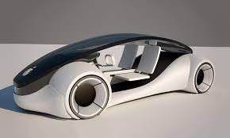

Carro Autônomo da Apple é Flagrado em Testes Pela Primeira Vez
Lilica Ripilica, Cupertino, Califórnia, 14 de fevereiro de 2024 – Um carro autônomo da Apple foi flagrado em testes pelas ruas da Califórnia, nos Estados Unidos, na segunda-feira (13). O veículo, que ainda está em fase de desenvolvimento, representa um passo importante para a empresa no mercado de carros autônomos.
O carro autônomo da Apple é um SUV Lexus RX modificado com sensores e software da empresa. O veículo foi flagrado com um motorista de segurança ao volante, o que é necessário para os testes de carros autônomos na Califórnia.
A Apple não divulgou muitos detalhes sobre seu projeto de carro autônomo, mas a empresa está trabalhando no projeto há vários anos. A empresa contratou centenas de engenheiros de software e especialistas em IA para o projeto e adquiriu várias empresas de tecnologia de carros autônomos.
O mercado de carros autônomos é altamente competitivo, com empresas como Tesla, Waymo e Cruise também trabalhando em seus próprios projetos. A Apple ainda está atrasada em relação a algumas dessas empresas, mas o fato de ter começado a testar seus carros autônomos nas ruas é um sinal de que está progredindo no projeto.
O que significa o teste do carro autônomo da Apple:
A Apple está avançando em seu projeto de carro autônomo. A empresa está competindo com outras empresas como Tesla, Waymo e Cruise. O mercado de carros autônomos é altamente competitivo e ainda está em desenvolvimento.
O futuro do carro autônomo da Apple:
A Apple ainda não divulgou quando planeja lançar um carro autônomo comercial. A empresa provavelmente continuará testando seus carros autônomos por vários anos antes de lançá-los para o público. O sucesso do carro autônomo da Apple dependerá de vários fatores, como a tecnologia, a regulamentação e a aceitação do consumidor.